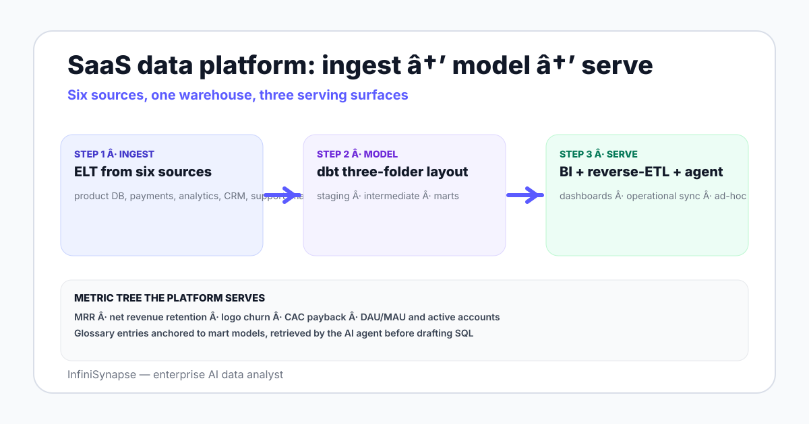

SaaS Data Platform in 2026: Architecture, Stack, Tradeoffs
A SaaS data platform architecture for 2026 — sources, the ELT layer, warehouse, dbt, BI, reverse-ETL, AI agents, and the metrics that drive the schema choices.
AuthorInfiniSynapse Research, product and data architecture team
Published2026-06-28 · Last verified 2026-06-28 · Next review 2026-09-28
Evidence basedbt analytics engineering documentation, Snowflake and BigQuery architecture references, Stripe and Segment vendor docs, public SaaS benchmark reports from OpenView and ChartMogul, and field experience across SaaS data teams.
Disclosure: This page is published by InfiniSynapse, which sells an enterprise AI data analyst used by SaaS data teams. The architecture is written to apply whether or not you use our product — the source list, warehouse choices, and dbt patterns are vendor-neutral.
TL;DR
A SaaS data platform in 2026 has six source classes (product DB, payments, product analytics, CRM, support, marketing), an ELT loader, a warehouse, a dbt layer, and three serving surfaces — BI, reverse-ETL, and an AI data agent.
ELT (extract-load-transform) beats ETL for most SaaS stacks because the warehouse compute is now cheap enough to land raw data and model in dbt.
Snowflake, BigQuery, and Databricks are the dominant warehouse choices in 2026; for early-stage SaaS, a managed Postgres warehouse like Neon or Supabase is a credible starting point.
dbt models organize into three folders — staging (clean and rename), intermediate (join and pre-aggregate), and marts (the questions the business asks). Each folder has its own job.
The serving layer includes BI for standing dashboards, reverse-ETL to push enriched audiences back into operational tools, and an AI data agent for ad-hoc analysis that does not fit a dashboard.
A SaaS data platform in 2026 has six source classes (product DB, payments, product analytics, CRM, support, marketing), an ELT loader, a warehouse (Snowflake, BigQuery, Databricks, or managed Postgres for early-stage), a dbt model layer organized into staging, intermediate, and marts, and three serving surfaces — BI, reverse-ETL, and an AI data agent. SaaS metrics drive the schema.

The six source classes a SaaS company pulls from
Product database. Postgres, MySQL, or whatever the application runs on. Users, accounts, plans, usage events.
Payments. Stripe (most common), Chargebee, or a billing-aware payments vendor. Subscriptions, invoices, charges, refunds.
Product analytics. Segment plus a downstream like Amplitude, Mixpanel, or PostHog; or directly to the warehouse via Snowplow or Rudderstack.
Marketing. Ad platforms, email and lifecycle vendors (Customer.io, Klaviyo, Iterable), social and content tools.
The six classes cover 95% of a typical SaaS schema. Edge sources (a billing exception system, a finance ERP, a contracts vault) land in the warehouse via a manual export or a custom connector when they show up.
ELT vs ETL — which one for a SaaS stack in 2026
The architectural decision in 2026 is mostly settled: ELT wins for SaaS stacks. The warehouse compute is now cheap enough to land raw data, model it inside the warehouse, and skip the transform-in-flight machinery ETL pipelines used to need.
Step
ETL (legacy)
ELT (modern SaaS default)
Extract
Same
Same — connector pulls from source
Transform
Inside the pipeline tool
Inside the warehouse, via dbt
Load
Pre-modeled data into the warehouse
Raw data into the warehouse, then model
Best for
Tightly bounded sources, regulated transforms
Most SaaS use cases — flexible modeling, easier debugging
Vendors in this category include Fivetran, Airbyte, Stitch, Hevo, and the source's own warehouse-export feature (e.g., Stripe Data Pipeline to Snowflake). See the companion data integration platforms guide for vendor-by-vendor tradeoffs.
Warehouse choice for a SaaS data platform
Warehouse
Best fit
Tradeoff
Snowflake
Mid-market and enterprise SaaS, mixed data scale
Operating cost grows fast without governance
BigQuery
GCP-resident teams, GA4 BigQuery export native
Schema management and IAM model take learning
Databricks SQL
SaaS teams with heavy ML and lakehouse needs
Higher learning curve for a pure analytics team
Managed Postgres (Neon, Supabase, Aurora)
Early-stage SaaS, < 100GB warehouse
Eventually outgrown when concurrency and partitioning matter
Redshift
AWS-bound teams with long-running data engineering
Newer warehouses now win head-to-head benchmarks on most SaaS workloads
The early-stage answer for a SaaS data team is rarely Snowflake on day one. Start with a managed Postgres data warehouse, model in dbt, and promote to a column-store warehouse when concurrency or scan size demands it.
The dbt model layer — three folders, three jobs
The conventional dbt model layout in 2026 has three folders, each with a different job:
staging — one model per source table. Clean, rename, cast types. No joins. The contract is "this is the canonical shape of a single source's data."
intermediate — joins and pre-aggregations that are reused across marts. Not exposed to BI. The contract is "this is the canonical join shape across sources."
marts — the questions the business asks. One model per business concept (mart_mrr, mart_active_customers, mart_account_health). These are the tables BI and the AI agent point at.
Tests live alongside the models — unique key tests on staging, not-null tests on intermediate, accepted-values tests on marts. The dbt docs walk the canonical pattern.
Serving — BI, reverse-ETL, and the AI data agent
Three serving surfaces share the mart layer:
BI. Looker, Metabase, Tableau, Power BI, or Hex/Mode for analyst notebooks. The job is standing dashboards on agreed metrics — MRR, churn cohorts, payback period, NRR.
Reverse-ETL. Hightouch, Census, or built-in operational sync. The job is pushing enriched audiences and account scores back into the CRM, customer.io, and the product itself.
AI data agent. InfiniSynapse or a peer connected to the warehouse with read-only role and a bound business glossary. The job is the ad-hoc question the dashboard cannot answer — anomaly investigation, cross-source reconciliation, new-question onboarding.
The three are complementary. A BI dashboard answers "what is happening". Reverse-ETL acts on what is happening. The agent investigates why what is happening is happening. See AI-native data platform for the deeper framing.
The SaaS metrics that drive the schema
Metric
Definition
Source tables
MRR
Sum of recurring subscription value per month
Stripe subscriptions + invoices, product DB plan table
The metric definitions become the canonical entries in the bound business glossary. The agent retrieves these before drafting SQL, which is how it stays aligned with the dbt mart definitions across analyst sessions.
A SaaS data platform is not its warehouse — it is the contract between the dbt marts, the BI dashboards, the reverse-ETL syncs, and the business glossary the agent reads.
Ask an open-ended question across your SaaS data warehouse
Connect Snowflake, BigQuery, Postgres, or another warehouse read-only. Seed a SaaS business glossary — what counts as an active account, which plan transitions count as expansion. Then ask one question the dashboard does not answer and watch the plan, SQL, and verification step return.
A SaaS data platform is the set of systems a SaaS company uses to bring data from its operational tools into a single analytical layer, model it for business use, and serve it through dashboards, reverse-ETL syncs, and AI data agents. In 2026 the dominant pattern has six source classes, an ELT loader, a cloud warehouse, a dbt model layer organized into staging-intermediate-marts, and three serving surfaces.
What are the main components of a SaaS data platform architecture?
Six components: sources (product DB, payments, product analytics, CRM, support, marketing), an ELT loader (Fivetran, Airbyte, Stitch, Hevo, or a vendor-native export), a cloud warehouse (Snowflake, BigQuery, Databricks, managed Postgres, or Redshift), a dbt model layer, a BI serving surface, a reverse-ETL serving surface, and an AI data agent for ad-hoc analysis. Each component has a clear job and is independently replaceable.
Which warehouse should a SaaS team pick?
Snowflake fits mid-market and enterprise SaaS with mixed data scale. BigQuery fits GCP-resident teams and pairs natively with GA4 BigQuery export. Databricks SQL fits teams with heavy ML and lakehouse needs. Managed Postgres warehouses like Neon, Supabase, or Aurora fit early-stage SaaS under 100GB. Redshift remains a credible AWS-bound choice. Pick by stage, cloud, and workload mix.
What does the dbt model layer look like in a SaaS data platform?
Three folders, each with a different contract. Staging — one model per source table, cleaned and renamed, no joins. Intermediate — joins and pre-aggregations reused across marts, not exposed to BI. Marts — one model per business concept, the tables BI and the AI agent point at. Tests live alongside models at every layer — unique keys on staging, not-null on intermediate, accepted values on marts.
What is reverse-ETL in a SaaS data platform?
Reverse-ETL is the practice of pushing modeled data from the warehouse back into operational tools. Hightouch, Census, and built-in warehouse syncs are the common vendors. The job is to make warehouse-derived enrichments — account health scores, lifecycle segments, account tier — available in the CRM, in customer.io, and in the product itself so go-to-market teams act on them.
How does an AI data agent fit a SaaS data platform?
The AI data agent connects to the warehouse read-only, reads a bound business glossary of SaaS metric definitions, and answers ad-hoc questions in plain English with a plan, SQL, result, and verification step. The job is the question the dashboard does not pre-build — anomaly investigation when MRR drifts, cross-source reconciliation when payments and product DB disagree, and new-question onboarding for non-analyst stakeholders.
What SaaS metrics drive the schema design?
MRR, net revenue retention, logo churn rate, CAC payback period, and active accounts (DAU/MAU and similar) are the five metrics that anchor the mart layer. Each metric has a canonical definition in the business glossary, sourced from a specific set of tables, and surfaced through a mart model. The glossary entries are what an AI agent retrieves before drafting SQL — the agent and the dbt marts share the same definition source.
Methodology and review notes
Last updated: 2026-06-28 · Next scheduled review: 2026-09-28
This architecture guide synthesizes dbt analytics engineering documentation, Snowflake and BigQuery vendor architecture references, Stripe and Segment integration docs, public SaaS benchmark reports from OpenView and ChartMogul, and field experience across SaaS data teams at stages from seed to growth. The six-source list, three-folder dbt layout, and three-serving-surface pattern reflect observed practice rather than vendor positioning.
Conflict of interest: InfiniSynapse publishes this guide and sells an enterprise AI data analyst. To reduce bias, the page leads with the topic itself, treats InfiniSynapse as one option among many, and links to external sources for every numeric claim.
Update cadence: Reviewed every 90 days for accuracy and link health.